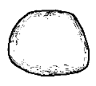
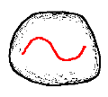
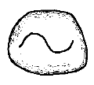
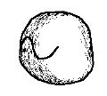
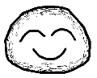
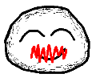
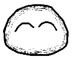
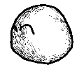

[1.Camera]
[2.Create]
[3.Paint]
[4.Extrude]
[5.Cut]
[6.Smooth]
[7.Bend]
[8.File]
Step 3: 表面への描画と消去
1
2
3
4
1) まず物体を生成してください。
2) オブジェクトの上に左ボタンドラッグで線
を描いてください。
(線の始点と終点が近すぎないようにしてください。もし
書きおわった線が赤くなったらすぐにクリックしてください。)
3) 線が３次元物体の表面に描画されます。
4) 物体を回転してみてください。
5
6
7
8
5-7) ぐちゃぐちゃした線を引くと描いた線を消去できます。
(ぐちゃぐちゃした線は十分に折り重なるように描いてください。)
8) 物体を回転してみてください。
十分練習できたら
step 4 へ
プログラムの動作がおかしくなったら、アプレットウィンドウを閉じて
Teddy を再スタート
してください。
Copyright (C) 1998
Takeo Igarashi